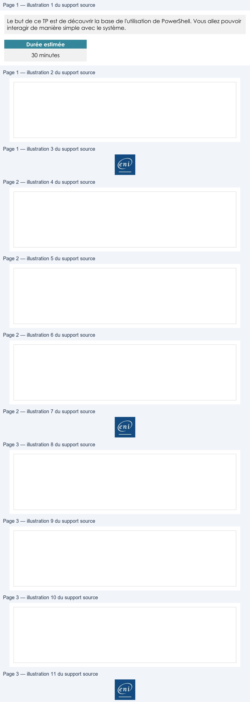

Transcription du document du Drive TSSR. La mise en forme est adaptée au Web ; les compléments IA du portail sont présentés séparément.
Page 1
Systèmes Clients Microsoft
Premiers pas avec
PowerShell
TP du Module 03 – Interagir avec Windows 10
Le but de ce TP est de découvrir la base de l'utilisation de PowerShell. Vous allez pouvoir
interagir de manière simple avec le système.
Durée estimée
30 minutes
Énoncé
Lisez l'ensemble de ce TP avant de vous lancer dans la pratique.
Sur la VM Win10-XX
Pour une meilleure lisibilité, personnalisez votre fenêtre PowerShell :

Changez la police et la taille de la police
Agrandissez votre fenêtre
Page 1/3
© ENI – Tous droits réservés
Page 2
Systèmes Clients Microsoft
Sur la VM Win10-XX, une fois votre fenêtre PowerShell prête, interagissez
avec votre système à l'aide des cmdlets
Quelle version de PowerShell est installée sur votre système ?
Affichez le contenu du répertoire courant .
Quelle cmdlet avez-vous utilisée ?
Affichez le contenu du répertoire c:\users.
Quelle cmdlet avez-vous utilisée ?
Affichez la liste des alias PowerShell.
Quelle cmdlet avez-vous utilisée ? Quels sont les alias de la cmdlet Getchild-Item ?
Page 2/3
© ENI – Tous droits réservés
Page 3
Systèmes Clients Microsoft
Faites un snapshot TP04 terminé
Sur la VM DiscoveryXX
Ouvrez une session avec l'utilisateur adm (Pa$$w0rd) puis interagissez avec votre système
à l'aide des cmdlets.
Affichez le contenu du fichier C:\PowerShell\Intro.txt.
Quelle cmdlet avez-vous utilisée ?
Dans quel répertoire êtes-vous actuellement ? Déplacez-vous à la racine du lecteur C:\.
Solution
Une solution est proposée pour ce TP sous la forme d'un PDF commenté, disponible dans
les ressources à télécharger.
Page 3/3
© ENI – Tous droits réservés

Illustrations du support Drive — pages 1 à 3. Les images sont regroupées sans redimensionnement ; aucun contenu généré par IA.